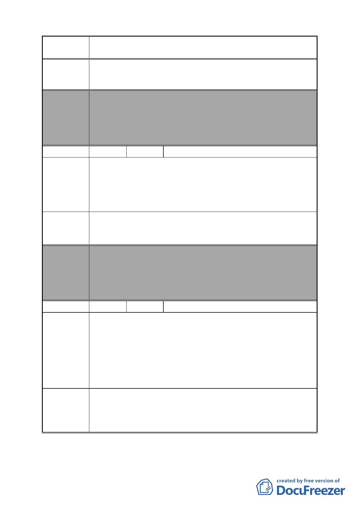

案名
變更臺北市南港區鐵路地下化沿線土地主要計畫案
或大型公園地下層，實為至盼。
委員會
決議
編號
陳情理由
建議辦法
委員會
決議
編號
陳情理由
建議辦法
本案除文字誤繕應再作修正外，其餘依市府本次會議所送修
正計畫書內容通過。
（依市府本次會議所送修正計畫書，本案將變電所用地自本
次計畫範圍剔除，俟台電公司另尋適當替代的設置地點，另
案辦理都市計畫變更）
59 陳情人 林彥君
我是住在玉成街 10 鄰的居民，靠近松山火車站新矽谷大
樓對面，這裡屬於工業用地，不過近幾年，這裡交通已經非
常便利，角程大約 7 分鐘可以到後山埤捷運站，且目前鐵路
已經地下化，距離松山捷運終點站（101 年底完工）及火車站
也只需要 3 至 4 分鐘的腳程。
這一次鐵路地下化就是要更新鐵路沿線附近的環境，這裡
交通便利人口密集，建議可否將新矽谷、玉成街這一區域納
入這一次計畫內，變更為商業區或住宅區，或住商混合區。
本案除文字誤繕應再作修正外，其餘依市府本次會議所送修
正計畫書內容通過。
（依市府本次會議說明，因陳情地點使用分區為策略型工業
區，依現行規定即可作廠辦使用，且作策略型產業使用時亦
可有容積獎勵，故不納入本計畫範圍）
60 陳情人 林沛涵
都市計畫本應以人民為中心考量，本區非荒蕪之地，改
為商業區雖為美事，但長久居住在此的居民，將面臨無處安身
的恐懼，據說未來重劃後歸還的土地未必為原處，那麼他處地
段、地價又是如何？誰能給予保證讓我們安心地看待這次的計
畫，我們是活生生居住在此的人民，非炒地皮的投資客，辛苦
一輩子的房產一夕成空，讓人擔憂不已，所以請將計畫再次慎
重地檢視，並加強安置居民。
反對此計畫案。
請先：
1.詳細地告知變更後的土地為何處，並以居民的意願為主。
2.除拆遷補償金外，應有住處安置的規劃。
- 63 -